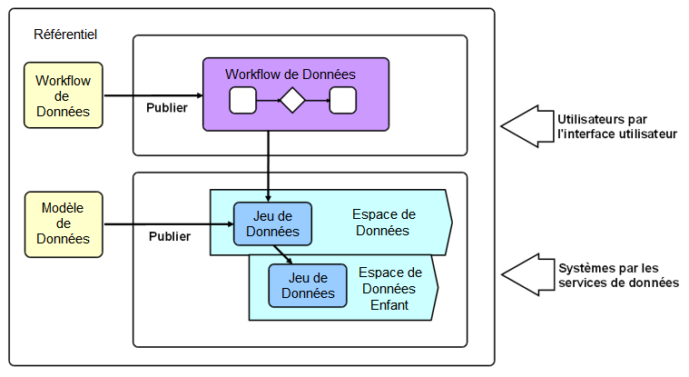
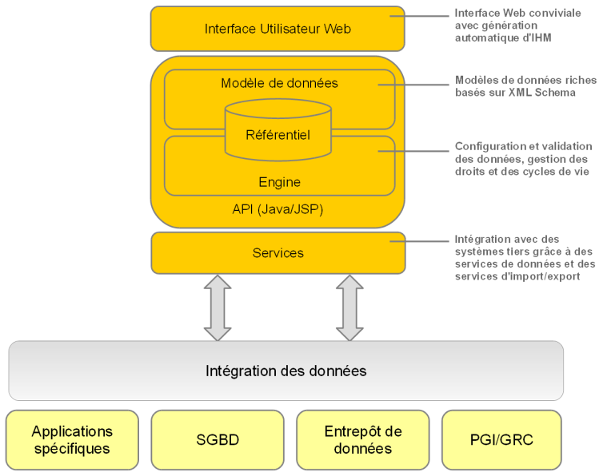

Notions clés
Contenu de la section
Concepts et outils associés
Le Master Data Management (MDM) est un moyen de modéliser, gérer et gouverner les données partagées. Quand des données sont partagées par plusieurs systèmes informatiques, ainsi que des équipes professionnelles différentes, l'existence d'une seule version gouvernée des données de référence est essentielle.
Avec EBX5, les utilisateurs métier et les informaticiens peuvent collaborer sur une solution unifiée, afin de concevoir des modèles de données et gérer le contenu des données de référence.
EBX5 est un logiciel de gestion des données de référence qui permet de modéliser tout type de données de référence et d'y appliquer une gouvernance grâce à des outils avancés comme le workflow collaboratif, le contrôle de l'édition de données, la gestion hiérarchique des données, le contrôle de version, et la sécurité.
Un projet MDM qui utilise EBX5 commence par la création d'un modèle de données. Celui-ci définit les tables, les champs, les liens et les règles métier permettant de décrire les données de référence. De bons exemples sont les catalogues de produits, les hiérarchies financières, les listes de fournisseurs ou simplement les tables de référence.
Ce modèle de données peut ensuite être publié en tant que jeu de données, stockant le contenu des données de référence. Les jeux de données sont organisés dans des espaces de données. Un espace de données est un conteneur qui permet d'isoler toutes les mises à jour qui sont effectuées. Cela permet de travailler sur plusieurs versions parallèles des données.
Les workflows sont indispensables pour effectuer les processus de modification et d'approbation sur les données. Un workflow permet de modéliser un processus étape par étape, comprenant la participation de plusieurs utilisateurs humains et automatisés.
Les modèles de workflow définissent les tâches à effectuer, ainsi que les participants associés à chaque tâche. Dès qu'un modèle de workflow est publié, il peut être exécuté en tant que workflow de données. Les workflows de données permettent d'envoyer aux utilisateurs des notifications concernant les événements pertinents et les tâches à accomplir, le tout dans un contexte collaboratif.
Les services de données aident à intégrer EBX5 à des systèmes tiers ("middleware"), en leur permettant d'accéder aux données, ou de gérer des espaces de données et des workflows.

Voir aussi
Architecture
Le schéma suivant présente l'architecture de EBX5.

 Sommaire du guide utilisateur
Sommaire du guide utilisateur